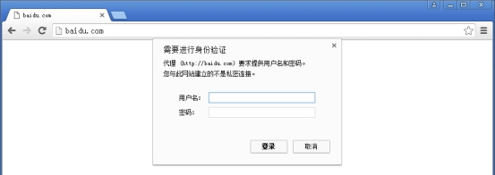
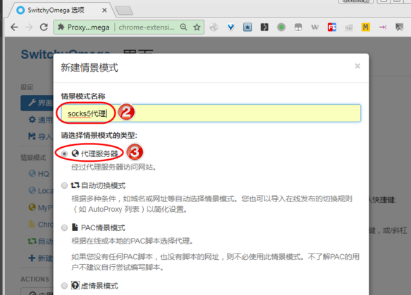
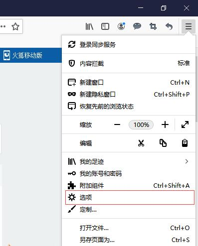

在本地電腦使用靜態住宅代理可以隱藏用戶的真實IP地址，從而提高隱私保護，避免個人信息被追蹤和洩露。Socks5靜態住宅代理可以幫助用戶突破地區性的限制訪問，訪問部分受限網站和服務，例如在某些國家無法訪問的社交媒體等。
有時候用戶可能遇到一些地理位置偏遠或網絡特別擁擠的服務器，這會導致訪問速度很慢。使用Socks5靜態住宅代理可以幫助用戶加速網絡訪問，尤其是一些視頻、圖片等需要大流量的網頁，使用代理服務器緩存能夠節省客戶端到服務器之間的連接時間。
不良分子可能通過多種渠道獲取用戶IP地址，甚至進行網絡攻擊和入侵。使用靜態住宅代理可以有效防範這些攻擊行為，增強網絡安全性。
總的來說，使用Socks5靜態住宅代理可以增加網絡匿名性，解除限制訪問，加快網絡訪問速度，提高網絡安全性等優勢。
使用Socks5靜態住宅代理IP優勢
隱藏真實IP地址：當您連接到Socks5靜態住宅代理服務器後，您的網絡流量被路由通過另一個IP地址，從而隱藏了您的真實IP地址。這可以增加您的隱私和安全性，防止不法分子竊取您的個人信息或跟蹤您的在線活動。
改善訪問速度: 由於Socks5靜態住宅代理服務器位於特定地區，所以選擇一個離您所在地區較近的代理服務器能夠改善您的訪問速度並縮短響應時間。
允許訪問限制網站: 如果您使用的是公共Wi-Fi網絡，可能會遇到某些受限制的網站無法訪問的問題。使用Socks5靜態住宅代理可以允許您繞過此類限制，訪問這些網站，同時保持匿名訪問。
提供更好的安全性：Socks5靜態住宅代理提供128位AES加密技術，一些其他協議只提供64位的加密技術，尤其是對於敏感數據及時進行傳輸加密十分有利。
本地瀏覽器使用Socks5靜態住宅代理IP方法
設置Socks5靜態住宅代理有以下情況及方法，你可以看看那種比較適合你！
方法一：本地國內網絡情況下
在Google瀏覽器左上角點擊-菜單-設置

點擊"系統”-打開您計算機的代理設置

在彈出窗設置代理IP地址和端口

在瀏覽器輸入 地址，然後彈出窗口設置代理ip賬號，代理ip密碼

方法二：國外網絡安裝代理插件SwitchyOmega
在線安裝
從 Chrome 應用商店安裝，如果您無法從該鏈接安裝，請使用下面的離線安裝。
離線安裝
①去 Github 下載 最新版安裝包
②、下載安裝文件後，在 Chrome 地址欄輸入 chrome://extensions 打開擴展程序，拖動 .crx 後綴的 SwitchyOmega 安裝文件到擴展程序中進行安裝。（如果無法直接安裝，請打開開發者模式，將 .crx 文件解壓縮後添加）
一、升級Chrome到最新版本；
二、安裝SwitchyOmega擴展程序；

三、打開SwitchyOmega擴展程序選項設置，右鍵點擊SwitchyOmega擴展程序圖標，點擊下拉菜單中的"選項"，就進入了SwitchyOmega擴展程序選項設置功能。

四、新增socks5代理情景模式，點擊上圖中"新建情景模式…"，在新建情景模式名稱中輸入socks5代理名稱，選擇"代理服務器"，點"創建"按鈕。

五、設置socks5代理情景模式，代理協議選擇"socks5"，輸入socks5代理服務器的地址和端口，點"應用選項"按鈕，應用設置。

方法三：火狐瀏覽器上使用socks5代理IP
一、打開火狐瀏覽器，點擊右上角菜單欄的“三”，然後點擊“選項”；

二、找到“網絡設置”，點擊“設置”；

三、然後選擇“手動代理配置”，然後在HTTP 代理（x）後面填寫 代理 ip 地址，端口後面填寫 代理 端口號，然後根據需求 選擇“為所有協議使用相同代理服務器（s）”, 根據需要選擇 SOCKS v4 或者SOCKS v5；

四、然後點擊“確定”就配置好了代理。

以上就是兩種瀏覽器上使用socks5代理IP的方法，遺憾的是，兩種瀏覽器都不支持使用賬號密碼授權的socks5代理IP。
最佳Socks5靜態住宅代理IP提供商介紹
使用Socks5靜態住宅代理可以增加網絡匿名性，解除限制訪問，加快網絡訪問速度，提高網絡安全性等優勢。下面介紹幾家優秀的Socks5靜態住宅代理IP提供商介紹：
| IPRoyal
最穩定可靠的Socks5靜態住宅代理IP提供商 |
$3.00/月 1個起 - $3.00/月 / 100個起 - $2.68/月 |
去IPRoyal官網 |
| HypeProxy.io
速度超快的Socks5靜態住宅代理IP提供商 |
$4.20/月 1個起 - $4.20/月 / 100個起 - $4.00/月 |
去IPRoyal官網 |
| Proxysale
土豪款的Socks5靜態住宅代理IP提供商 |
$4.5/月 1個起 - $4.50/月 / 100個起 - $4.20/月 |
去IPRoyal官網 |
| Proxy Cheap
安全性極高的Socks5靜態住宅代理IP提供商 |
$3.49/月 1個起 - $3.49/月 / 100個起 - $3.20/月 |
去IPRoyal官網 |
| Proxy-seller
最便宜的Socks5靜態住宅代理IP提供商 |
$2.91/月 1個起 - $2.91/月 / 100個起 - $2.45/月 |
去IPRoyal官網 |
| Shifter
極品社交媒體Socks5靜態住宅代理IP提供商 |
$3.00/月 25個起 - $3.00/月 / 100個起 - $2.85/月 |
去IPRoyal官網 |
| NetNut proxies
土豪型的Socks5靜態住宅代理IP提供商 |
$2.99/月 10個起 - $2.99/月 / 100個起 - $2.58/月 |
去IPRoyal官網 |
使用Socks5靜態住宅代理IP有什麼好處？
結合Socks5靜態住宅代理之後，在本地瀏覽器中會獲得以下幾個優勢：
提高隱私保護：使用靜態住宅代理可以隱藏用戶的真實IP地址，從而提高隱私保護，避免個人信息被追蹤和洩露。
突破限制訪問：Socks5靜態住宅代理可以幫助用戶突破地區性的限制訪問，訪問部分受限網站和服務，例如在某些國家無法訪問的社交媒體等。
加速網絡訪問：有時候用戶可能遇到一些地理位置偏遠或網絡特別擁擠的服務器，這會導致訪問速度很慢。使用Socks5靜態住宅代理可以幫助用戶加速網絡訪問，尤其是一些視頻、圖片等需要大流量的網頁，使用代理服務器緩存能夠節省客戶端到服務器之間的連接時間。
防範黑客攻擊：不良分子可能通過多種渠道獲取用戶IP地址，甚至進行網絡攻擊和入侵。使用靜態住宅代理可以有效防範這些攻擊行為，增強網絡安全性。
總的來說，使用Socks5靜態住宅代理可以增加網絡匿名性，解除限制訪問，加快網絡訪問速度，提高網絡安全性等優勢。